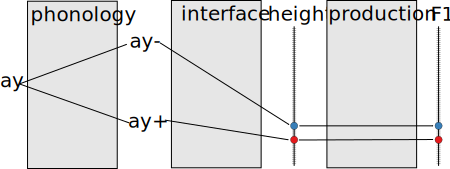
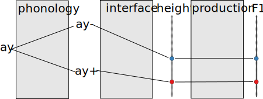

Lexical
- Chipotle : tʃəpotle > tʃəpolte
Phonology
| Intervocalic | Word Final |
|---|---|
| lispiŋ | lisp > lips |
Phonetics
pasta > pahta ~ paht^ha ~ pat^ha
May 29, 2014
| Intervocalic | Word Final |
|---|---|
| lispiŋ | lisp > lips |
pasta > pahta ~ paht^ha ~ pat^ha





| Speakers | Total Audio | Transcribed | Vowels |
|---|---|---|---|
| 327 | 251 hours | 194 hours | 618,126 |